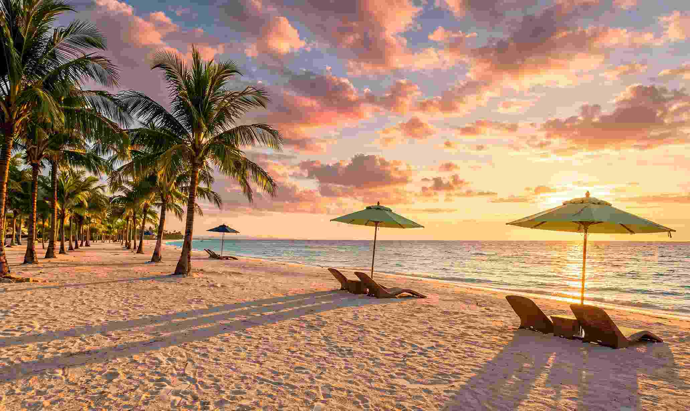

Panglao is the island most visitors mean when they say they are going to Bohol for the beach. It is joined to Tagbilaran by two bridges, it has its own airport, and Alona Beach on its southern coast has the densest cluster of rooms, dive shops, tour desks and restaurants on the island. The real planning question is not whether to go, but where on Panglao to sleep, how to arrive, and what to leave for other days.
Alona is a short, curved cove rather than a long open shoreline. Fishing outriggers, resorts and beach bars share the same strip of sand, which makes it convenient and sometimes crowded. Quieter stretches such as Dumaluan and Libaong are a few minutes away if that sounds like too much.
This guide covers how to reach Panglao from Cebu, what Alona is like in practice, when to go, and how to split two days so the boat trips and the Bohol mainland do not collide.

Getting to Panglao From Cebu
By fast ferry and bus
Most travellers from Cebu City take a fast ferry to Tagbilaran, which crosses in about two hours. OceanJet, SuperCat and Lite Ferries all sail this route, and fares range from the lower hundreds of pesos for the slower boats to well over ₱1,000 for business class on the fast ones. Prices and sailing times change, so check the current schedule before you book. Our Bohol day trip from Cebu guide goes through the sailings in more detail.
From Tagbilaran Port, the cheapest route to Alona is a short tricycle ride to the Dao bus terminal, then a Panglao-bound bus or jeepney that takes roughly 45 to 60 minutes. Expect to pay around ₱70 to ₱100 for that leg. With bags or a group, a direct tricycle, taxi or Grab from the port is simpler. Agree on the fare before you get in.
By plane
Bohol-Panglao International Airport sits on Panglao itself, so flying from Cebu skips the ferry and the Tagbilaran transfer. Flights from Mactan-Cebu take under an hour. From the airport, a tricycle, van or Grab to Alona is a 15 to 30 minute ride, and a public bus is cheaper but slower. Flying is mainly worth it when you are connecting from another flight or you want to avoid a morning at the pier.
If you arrive after dark, book a transfer through your hotel. Buses thin out in the evening, and walk-up tricycle prices tend to rise.
What Alona Beach Is Actually Like
The sand is fine and pale, but how much of it you can use depends on the tide. At high tide the water comes close to the resort fronts, and loungers and walking space shrink. Early morning and late afternoon are the best times to swim or stroll.
Boats come and go along the shoreline all day, so swim in the marked areas and keep an eye on the outriggers. Walking on the beach costs nothing. Some resorts charge non-guests for chairs and shade unless you order food or drinks.
In the evening the strip changes character. Bars put tables on the sand, and live music and fire shows are common along the shoreline. It is livelier than a quiet resort beach and smaller than the big-name party islands, so conversation is still possible. If you want to sleep early, choose a room set back from the sand. Places 50 to 100 metres inland are generally cheaper than beachfront and further from the loudest bars.
Alona or a Quieter Beach?
Alona suits you if you want to walk to dinner, book a boat the night before and not spend money on transport. Its weakness is that the beach itself is busy and narrow at high tide.
Dumaluan and Libaong, a short ride along the coast, have wider stretches of sand and fewer boats. Many travellers stay in Alona for convenience and spend a few hours at a quieter beach when they want to swim in peace. The trade-off is simple: more services in Alona, more space elsewhere.
What to Book From Alona
Island hopping to Balicasag and Virgin Island
This is the main reason most people base themselves here. Boats leave early in the morning for dolphin watching, snorkelling at Balicasag and the Virgin Island sandbar. Fees, visitor caps and rules have changed in recent years, so read our Balicasag and Virgin Island guide before you book, and ask your operator what the price includes. Book the evening before, especially in March, April and Holy Week.
Napaling for sardines
Napaling Reef, a short tricycle ride from Alona, has a sardine school close to shore that you can see with just a mask. Small fees for entrance, the environment and a guide can add up to around ₱300, so ask at the entrance. If you have been to Moalboal, you will recognise the idea, and our Moalboal sardine run guide explains how that version works. Bring your own mask if you can, because rental masks often fog and leak.
The mainland loop
Alona works as a base for the classic Bohol countryside circuit: Hinagdanan Cave, the tarsier sanctuary in Corella, the Bilar mahogany forest, a Loboc River cruise and the Chocolate Hills in Carmen. A private van for about eight hours typically runs ₱2,500 to ₱3,500 per vehicle, and a Loboc cruise with a buffet lunch is usually in the ₱850 to ₱1,200 range. The Chocolate Hills viewing deck has been quoted at ₱150 per person. Treat all of these as planning figures and confirm them before you pay.
Do not try to fit the mainland loop and the island hopping into the same day. Each one fills a day, and the early boat departure makes a late countryside run miserable.
When to Go and What to Watch For
The drier months, roughly November to May, give the calmest seas and the best visibility for snorkelling. March, April and Holy Week are the busiest, and rooms near the beach can fill weeks ahead. From June to September the southwest monsoon can roughen the crossing and cancel boat trips at short notice, so leave a spare day if you are flying out on a fixed date.
Carry cash in small bills. Many guesthouses, tricycles and tour desks do not take cards, and larger notes are hard to break. Wear a rash guard instead of heavy sunscreen on the reef trips, keep fins off the coral and never touch the turtles.
A Simple Two-Day Split
On day one, take the early boat to Balicasag and Virgin Island, return by early afternoon, rest through the heat and walk the beach in the late afternoon. On day two, hire a van for the countryside loop, and if the schedule is tight, drop the river cruise rather than rushing the Chocolate Hills. If you have a third day, spend it at Napaling in the morning and a quieter beach in the afternoon.
Is Panglao Worth Using as Your Base?
For a first trip to Bohol, yes. Alona is not the quietest beach in the Visayas, but it puts boat trips, food, dive shops and transport within walking distance. Choose a room slightly inland, book your boat the night before, and keep one full day for the mainland.